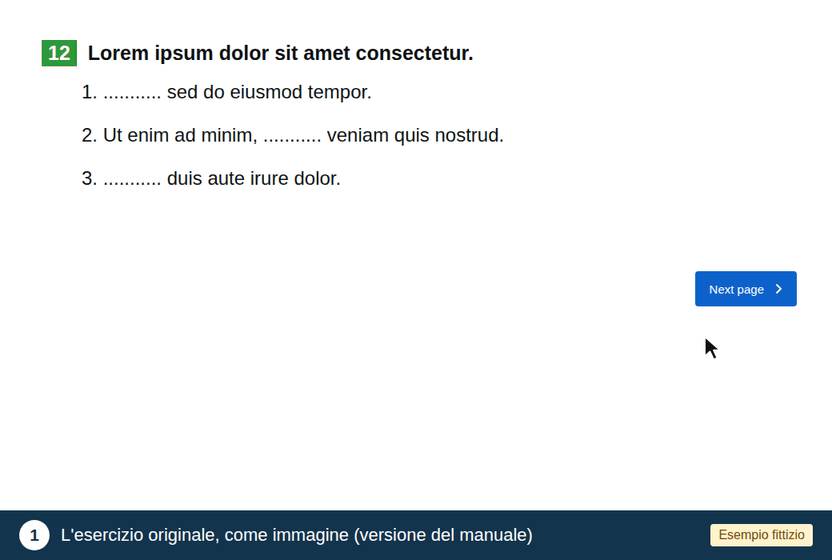

Valutazione degli esercizi adattati
Valuterà 16 esercizi, presentati in ordine casuale. Si metta nei panni di un bambino con disprassia.
Nell'animazione (contenuto fittizio), segua le 3 fasi indicate nella fascia blu:
Non ci sono risposte giuste o sbagliate e ciò che fa nell'esercizio non viene registrato. Non potrà tornare alle pagine precedenti.
